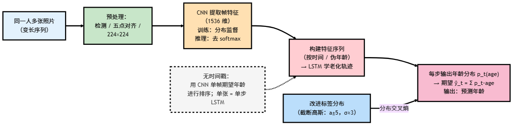

精读解析 | 从静态到时序：个体化衰老轨迹与标签分布学习
本文精读 Geng 等《Recurrent age estimation》(2019)，梳理了 Recurrent Age Estimation（RAE）的算法流程与整体结构，并总结其在公开数据集上的实验设置与主要结果，对模型效果与计算代价做简要分析。
本文前置文章链接：
多数年龄估计仍停留在单帧层面，即便用 LDL 也忽视人的时间变化。RAE 把同一人的多张照片组成序列：CNN 提取外观表示，LSTM 学习个体化老化轨迹；同时将标签分布截断在真实年龄邻域（a±5 岁）。这种“时序 + 邻域化分布”的组合在标准数据集上显著降低 MAE，序列越充分收益越大。
循环式年龄估计（RAE）
RAE 的出发点是把“同一人的多张脸”视作时间序列，用卷积网络学习稳定的外观表示，再用循环网络去捕捉个体随时间推进的老化轨迹。具体做法是：先用 Inception-v4 在年龄标签分布监督下训练成分类器；训练完成后移除 softmax，仅保留“最后 dropout 之前”的特征作为帧级表示（1536 维），按“同一人、近似时间顺序”串成序列送入 LSTM。为了让监督更贴近现实，标签分布不再用全域高斯，而是将真实年龄 a 的分布截断在 [a−5, a+5] 的邻域内、区外置零（σ≈3），既保留邻近年龄的模糊性，又抑制远离真龄的噪声尾部。LSTM 在每个时间步输出一条年龄分布，训练时以分布交叉熵最小化序列级目标；推理时对该分布取期望得到标量年龄。RAE 能处理变长序列：只有单张照片时退化为单步序列，仍能输出结果；若无可靠时间戳，可用 EXIF/文件时间，或用单帧粗预测的“伪年龄”将同人多张图从小到大排序，再前向 LSTM。数据预处理遵循常规：检测—五点对齐—缩放到 224×224，按“人”划分训练/测试以避免同人泄漏；推理可选用左右翻转的简单 TTA 做稳健化。算法流程如下图所示。

实验与结果分析
在 MORPH 与 FG-NET 两个公开库上，RAE 相比只依赖单帧外观的 DLDL 获得了显著更低的 MAE：前者在 MORPH 上约 1.32（后者约 2.43），在 FG-NET 上约 2.19（后者约 3.76）；累计得分（CS）曲线同样全面占优。提升的主要来源，一是 LSTM 捕捉了“这个人老得快/慢、哪些外观线索随时间稳定发生变化”等个体化时序信息，二是截断高斯的标签分布把监督信号集中在合理邻域内，缓解了小样本与标注噪声带来的不稳定。随着可用序列变长，预测通常更稳更准；若加入姿态剧烈或画质较差的帧，收益会减弱。计算代价方面，RAE 在训练与推理上略慢于纯 CNN，但在 GPU 上提取帧特征的吞吐可满足实际需求。整体来看，当数据具备“同人多张”的最基本条件时，RAE 将“分布的不确定性”和“时间的上下文”合到同一框架中，能在不牺牲可落地性的前提下带来清晰、可复现的精度收益。